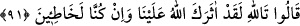
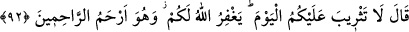

90. Dediler ki: “Yoksa sen gerçekten Yûsuf musun?” O da: “(Evet) ben
Yûsuf’um, bu da kardeşimdir. Allah bize lütfetti. Doğrusu kim (Allah’tan) korkar
ve sabrederse, şüphesiz Allah güzel davrananların mükâfatını zâyi etmez!” dedi.
“Dediler ki: “Yoksa sen Yûsuf musun?” Bu ifade istifhâm-ı takrîrî olup: “Elbette sen
Yûsuf’sun. Bu güzellik ve kemâlin başkasında olmasına imkan yok.” dediler.
Senin yanağının güzelliği gibi güzellerde yoktur
Allah sâhip olduğun bu nâzenin yüzü mübârek eylesin
O da: “(Evet) ben Yûsuf ’um, bu da” ana-baba bir “kardeşimdir.” Kendini daha iyi
ve tam olarak tanıtabilmek ayrıca onun da şanını yüceltmek ve “Allah bize lütfetti”
ifadesine onu da dâhil etmek için kardeşi Bünyamin’i de andı.
Bir bakıma şöyle demiş oluyor: “Bize yaptıklarınıza, bizi birbirimizden ayırma ve
zelîl etme fiillerinizi anladınız mı? İşte ben Yûsuf’um, bu da kardeşim. Allah, mübtelâ
olduğumuz belâlardan bizi kurtardı. Ayrılıktan sonra bir araya getirdi. Yalnızlıktan sonra
ünsiyet ve yakınlık nimetlerini bahşetti.
“Doğrusu kim (Allah’tan) korkar” yani her hâl ü kârda takvâya uygun davranır yahut
kendisini Allah’ın öfke ve azâbını harekete geçirecek davranışlardan korur “ve” vatan,
aşîret ve âileden ayrılmak, zindana atılmak gibi sıkıntılara ya da tâatlerin zorluğuna
yahut da nefsin hoşlanıp zevk aldığı mâsıyetlere “sabrederse, şüphesiz Allah güzel
davrananların mükâfâtını zâyi etmez!” dedi.” ‘Onlar’ zamiri kullanacak yerde ‘iyilik
edenlerin’ şeklinde zâhir isim kullanılmış olması, ihsân ehlinin takvâ ve sabrı
kendisinde topladığına dikkat çekmek içindir.
Yûsuf’un kardeşleri onu görüp tanıyınca tahtına yüz sürmek, ayağına kapanmak
istediler. Yûsuf tahtından inip onları yanına aldı
91. (Kardeşleri) dediler ki: Allah’a andolsun, hakikaten Allah seni bize üstün
kıldı. Gerçekten biz suç işlemiştik.” dediler.
Kardeşleri “dediler ki: “Allah’a andolsun, hakikaten Allah seni bize üstün kıldı.”
Allah seni seçti. Güzellik, olgunluk, rütbe ve mal bakımından bizden üstün kıldı.
“Gerçekten biz suç işlemiştik.” dediler.” Yani biz, bu suçları bile bile işleyerek sana
karşı elimizden geleni ardımıza koymadık. Bu sebeple de Allah Teâlâ seni azîz; bizi
zelîl kıldı.
Kardeşlerin bu sözünden tevbe ettikleri hissedilmektedir. Onun için Yûsuf (a.s.) şöyle
dedi: